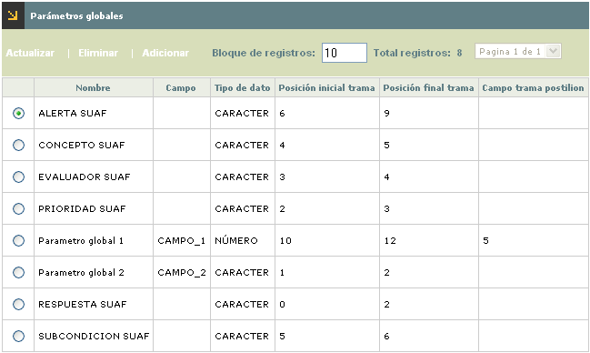
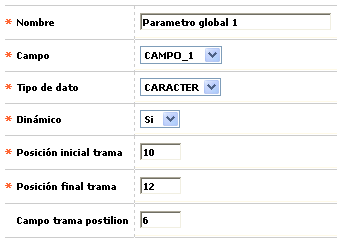
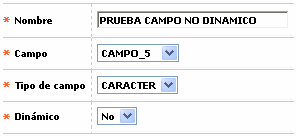
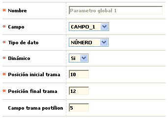

Parámetros globales |
Mediante esta opción, la entidad parametriza las características para la operación de los parámetros adicionales a los establecidos como estandar para la evaluación de las reglas por parte del autorizador.
Por defecto, al ingresar al formulario muestra todos los parámetros globales que ya hayan sido definidos.

El formulario contiene las opciones Actualizar, Eliminar y Adicionar.
Adicionar: Si el usuario invoca la opción Adicionar se despliega un formulario con los siguientes campos:

Cuando el par�metro No es din�mico:

Nombre |
Campo alfanumérico de hasta 30 caracteres, obligatorio, en el cual se registra el nombre con el cual se va a identificar el parámetro global. |
Campo |
Este campo tipo combo, obligatorio, permite seleccionar entre CAMPO_1 ... CAMPO_10, cual de los 10 campos disponibles para ser utilizado como parámetro global es el que se va a utilizar. |
Tipo de campo |
Campo obligatorio tipo combo en el cual se indica si el parámetro global que se está definiendo se debe comportar como un tipo de dato NUMÉRICO, CARACTER o FECHA. |
Din�mico |
En este campo obligatorio se puede seleccionar entre Si o No; en el primer caso (Si) le indica al sistema que el dato va a llegar en la trama enviada por el switch al autorizador, lo que requiere que el switch env�e en la posici�n indicada el dato respectivo, para que pueda ser validado por las reglas. En el segundo caso (No) se está indicando que el dato se va a leer directamente de la tabla de parámetros, caso en el cual, el dato se debe enviar en el archivo de parámetros para ser cargado desde automatización de procesos. |
Posición inicial trama |
Si en el campo anterior se selecciona la opción No, este campo se oculta automáticamente en el formulario. Para el diligenciamiento de este campo el actor debe tener en cuenta que este está dado en base '0' es decir, que la posición inicial corresponde a la posición inmediatamente anterior a aquella en la cual comienza el dato correspondiente al parámetro que se está definiendo. Por ejemplo si el dato inicia desde la posición '1', en este campo se debe parametrizar '0'; si inicia en la posición '10', se debe parametrizar '9'. |
Posición final trama |
Si en el campo 'Din�mico' se selecciona la opci�n No, este campo se oculta automáticamente en el formulario. Para el diligenciamiento de este campo el actor debe tener en cuenta que este está dado en base '1' es decir, que corresponde a la última posición inclusive, que ocupa el dato correspondiente al parámetro que se está definiendo. Por ejemplo si el dato va hasta la posición '10' inclusive, este mismo valor es el que se debe parmetrizar. |
Trama postilion |
Cuando en el campo 'Din�mico' se ha seleccionado la opci�n SI, aqu� se registra el c�digo que identifica el campo respectivo dentro de la trama que postilion le env�a al autorizador, para indicar cual es el dato que corresponde al par�metro global din�mico definido por el usuario y que va a ser tomado para validar reglas del autorizador. |
Actualizar: Si el usuario invoca la opción Actualizar se despliega un nuevo formulario en el cual el único campo NO modificable es el Nombre.
